冷开场
0:00–0:48 5 镜头台词「October 30, 2021，我 Natalie Lynn 满20岁。没想到会在路边过生日…也不知道为啥得走着过。」
音乐静默淡入，约20秒后进轻柔垫乐，节奏松弛。
镜头黑场淡入 → 车内POV跟拍绿色复古房车 → 湖边观景台远景；长镜+手持POV，建立『在路上』的纪实感。
| # | 画面 | 入–出 | 时长 | 节奏 | 备注（调色/构图/运镜） |
|---|---|---|---|---|---|
| 01 | 0:00→0:01 | 1.2s | 常规 | ||
| 02 | 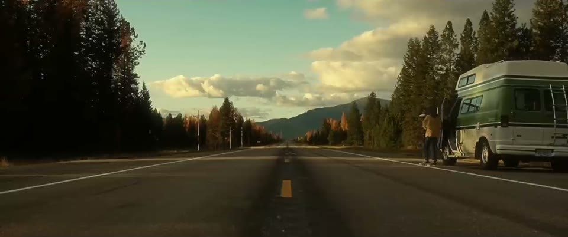 |
0:01→0:15 | 13.5s | 常规 | 固定，远景 |
| 03 | 0:15→0:16 | 1.3s | 常规 | 固定，中景 | |
| 04 | 0:16→0:42 | 25.8s | 常规 | 固定，远景，手持近景镜头混合， | |
| 05 | 0:42→0:55 | 13.2s | 常规 | 固定，近景 |
死亡哲思蒙太奇
0:48–2:10高潮 7 镜头台词「越长大越意识到，总有一天我和所有认识的人都会死。」+ 旁白字幕：The ending of life／We must accept death／Once you're dead, your life in this body is over forever.
音乐能量峰值①（1:30–2:00，-11dB），戏剧性弦乐持续推进，旁白清晰盖在乐上。
镜头实拍硬切到黑白纪录片/解剖心脏/火烧林/枯木纹理；彩色↔黑白质感对撞，字幕逐句卡旁白，营造哲学严肃感。
| # | 画面 | 入–出 | 时长 | 节奏 | 备注（调色/构图/运镜） |
|---|---|---|---|---|---|
| 06 |  |
0:55→1:22 | 27.0s | 常规 | 固定，远景 |
| 07 | 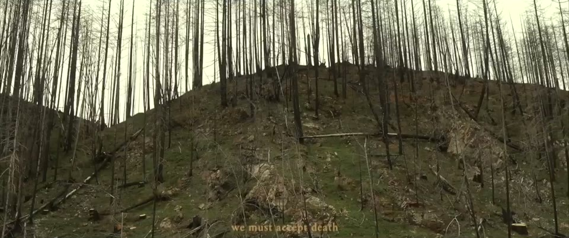 |
1:22→1:44 | 21.8s | 常规 | 章节变化，向后推移，远景，情绪 down |
| 08 |  |
1:44→1:45 | 1.6s | 常规 | 引入其他素材，显示于素材的混合，旋转运镜现实镜头与素材混合 |
| 09 |  |
1:45→1:48 | 2.5s | 常规 | |
| 10 | 1:48→1:50 | 2.2s | 常规 | ||
| 11 | 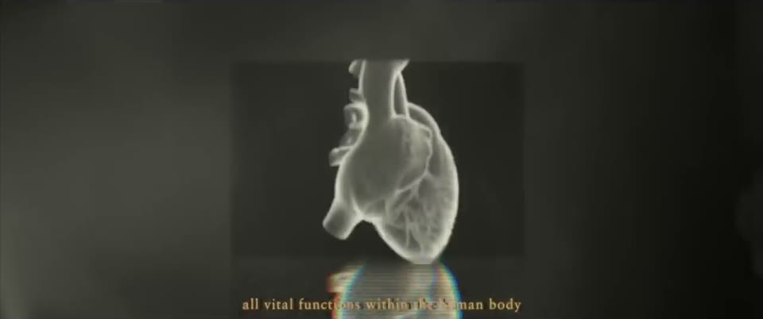 |
1:50→1:59 | 9.2s | 常规 | |
| 12 |  |
1:59→2:11 | 11.5s | 常规 |
恐惧独白
2:10–3:35 3 镜头台词「没人聊死亡的必然有多疯狂…我怕死，你的一切和所有记忆可能一瞬间就没了。住房车不断到新地方让我开始接受无常，但也更怕死，因为发现日子过得太快。」
音乐回落到中低（-18~-23dB），氛围 Pad 垫底，给独白留呼吸。
镜头树下手捧饮品口播长镜（近40秒），暖光浅景深；插入枯林中渺小远景做『人之渺小』隐喻。
| # | 画面 | 入–出 | 时长 | 节奏 | 备注（调色/构图/运镜） |
|---|---|---|---|---|---|
| 13 |  |
2:11→2:50 | 38.6s | 长镜 | 固定，近景，思考，混合一些素材，思考型音乐整段 |
| 14 |  |
2:50→2:54 | 4.5s | 常规 | |
| 15 | 2:54→3:02 | 7.7s | 常规 |
决定冒险
3:35–4:00 16 镜头台词「为真正直面怕死，我决定去做一件字面上可能害死我的事。Oh my God…说真的这是糟糕主意，不推荐任何人。」
音乐节奏明显加快，鼓点进入，能量抬升铺垫冒险。
镜头房车公路行驶+人站车顶多角度+航拍盘山路 → 风光快切montage（镜头21-26每个约0.6秒卡点），『世界很大我要出发』。
| # | 画面 | 入–出 | 时长 | 节奏 | 备注（调色/构图/运镜） |
|---|---|---|---|---|---|
| 16 |  |
3:02→3:09 | 7.2s | 常规 | 固定镜头快切，情绪变化，节奏增加 |
| 17 | 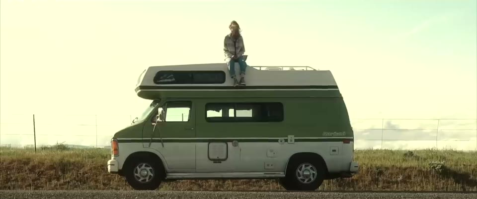 |
3:09→3:10 | 0.6s | 快切 | 0.6s 卡点快切起手，下俯航拍，金草原色块极简 |
| 18 | 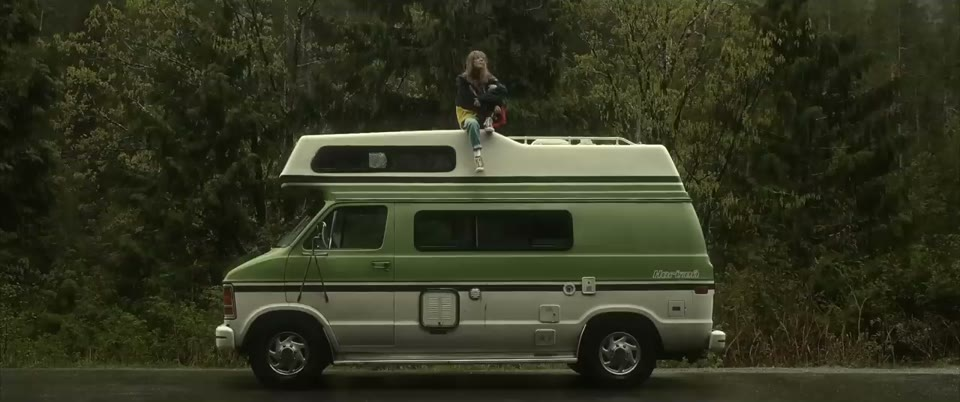 |
3:10→3:10 | 0.6s | 快切 | |
| 19 | 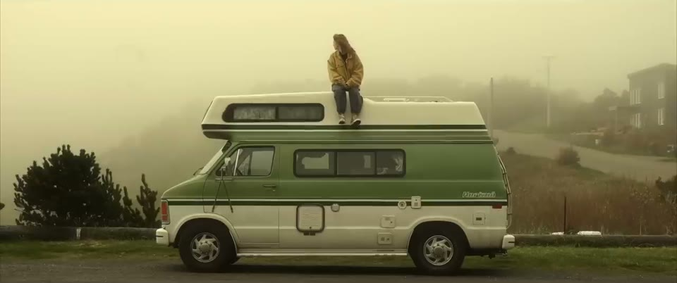 |
3:10→3:11 | 0.6s | 快切 | |
| 20 | 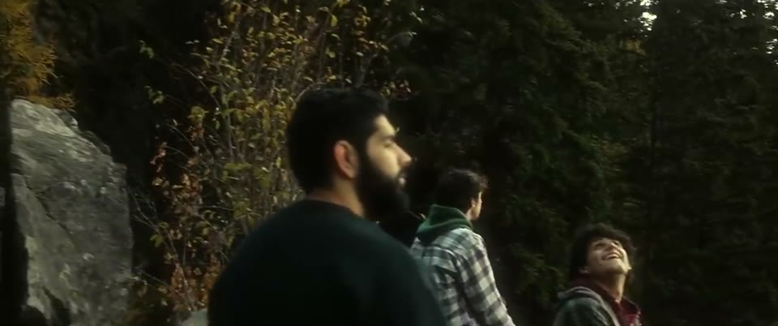 |
3:11→3:11 | 0.6s | 快切 | |
| 21 | 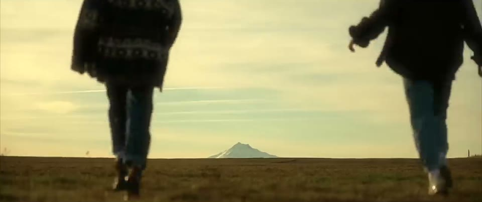 |
3:11→3:12 | 0.7s | 快切 | |
| 22 | 3:12→3:15 | 2.9s | 常规 | 航拍 | |
| 23 | 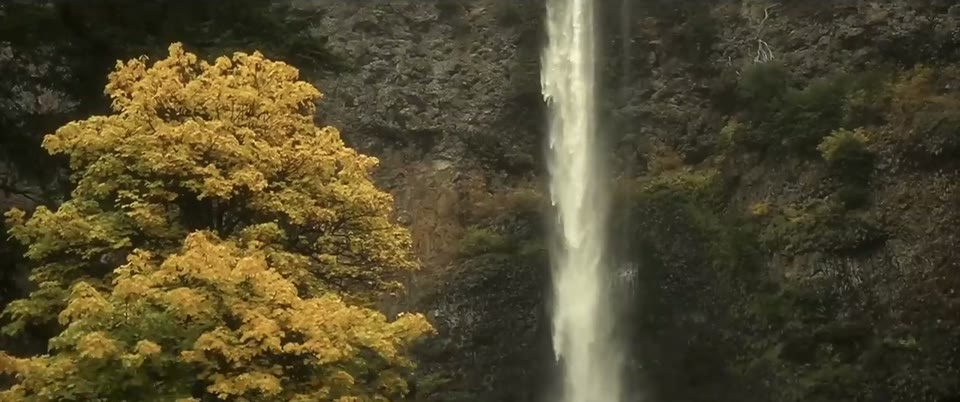 |
3:15→3:16 | 1.4s | 常规 | 手持，近景 |
| 24 |  |
3:16→3:24 | 7.6s | 常规 | 手持，镜头混合 |
| 25 | 3:24→3:25 | 0.6s | 快切 | ||
| 26 | 3:25→3:25 | 0.6s | 快切 | 远景，固定镜头 | |
| 27 | 3:25→3:26 | 0.6s | 快切 | ||
| 28 | 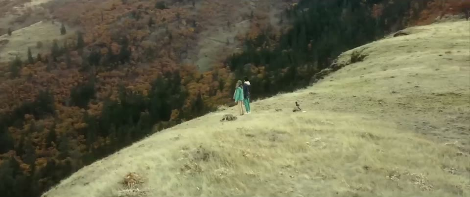 |
3:26→3:26 | 0.6s | 快切 | 多素材快捷，混合镜头 |
| 29 | 3:26→3:27 | 0.6s | 快切 | ||
| 30 |  |
3:27→3:28 | 0.7s | 快切 | |
| 31 |  |
3:28→3:28 | 0.6s | 快切 |
大桥探秘+研究
4:00–5:16 19 镜头台词「几年前发现一个疯狂地点——Vance Creek Bridge！(回声叠词) 从15岁在网上看到就是梦想之地…378英尺高，全美第二高铁路桥。」
音乐好奇/轻快，能量中等平稳。
镜头河边惊叹特写+攀爬；穿插屏幕录制（YouTube/百科/Google图片）做『功课』真实感；航拍揭示规模，特写跳极远景拉反差。
| # | 画面 | 入–出 | 时长 | 节奏 | 备注（调色/构图/运镜） |
|---|---|---|---|---|---|
| 32 |  |
3:28→3:29 | 0.7s | 快切 | |
| 33 | 3:29→3:30 | 1.0s | 常规 | 固定镜头 | |
| 34 |  |
3:30→3:31 | 1.0s | 常规 | |
| 35 | 3:31→3:39 | 8.0s | 常规 | ||
| 36 | 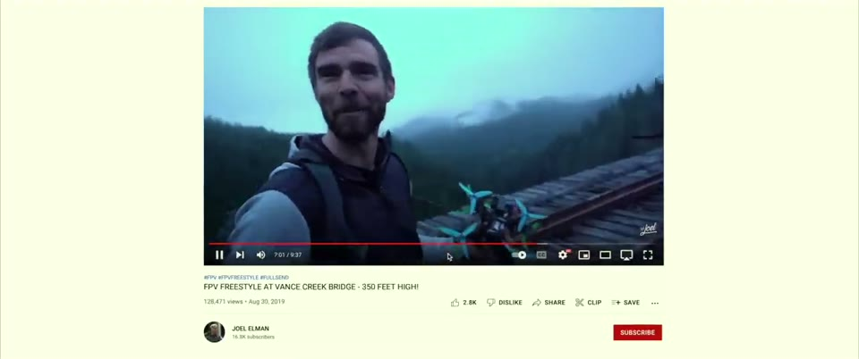 |
3:39→3:43 | 4.3s | 常规 | 近景，固定 |
| 37 |  |
3:43→3:57 | 13.7s | 常规 | 映月节奏变化，紧张音乐 |
| 38 | 3:57→4:01 | 4.2s | 常规 | 航拍，远景 | |
| 39 |  |
4:01→4:04 | 2.4s | 常规 | |
| 40 | 4:04→4:08 | 4.4s | 常规 | ||
| 41 | 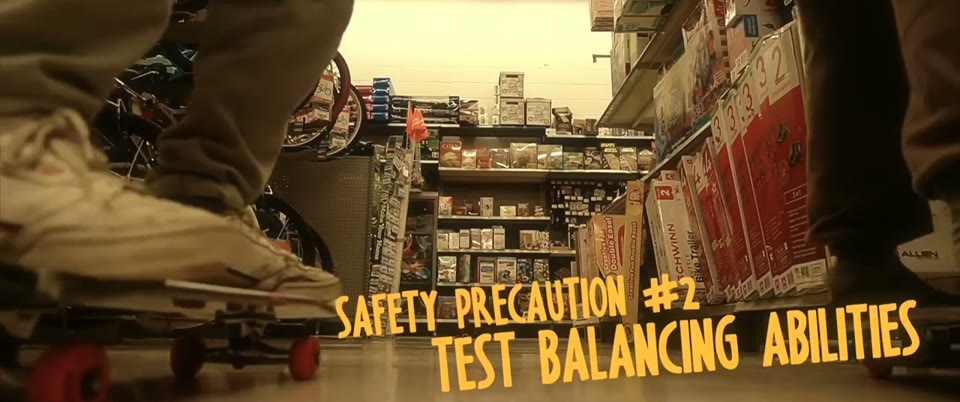 |
4:08→4:31 | 23.5s | 常规 | |
| 42 | 4:31→4:39 | 7.5s | 常规 | 航拍，空灵音乐 | |
| 43 | 4:39→4:45 | 5.9s | 常规 | 引入别人的素材，交代灵感来源 | |
| 44 | 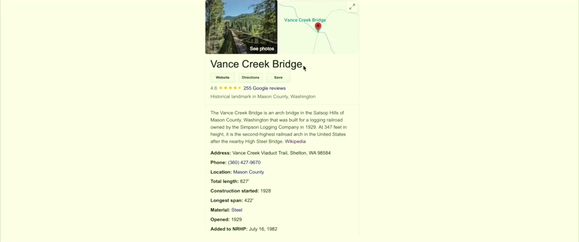 |
4:45→4:47 | 2.3s | 常规 | |
| 45 |  |
4:47→4:52 | 4.7s | 常规 | |
| 46 |  |
4:52→4:59 | 6.7s | 常规 | |
| 47 | 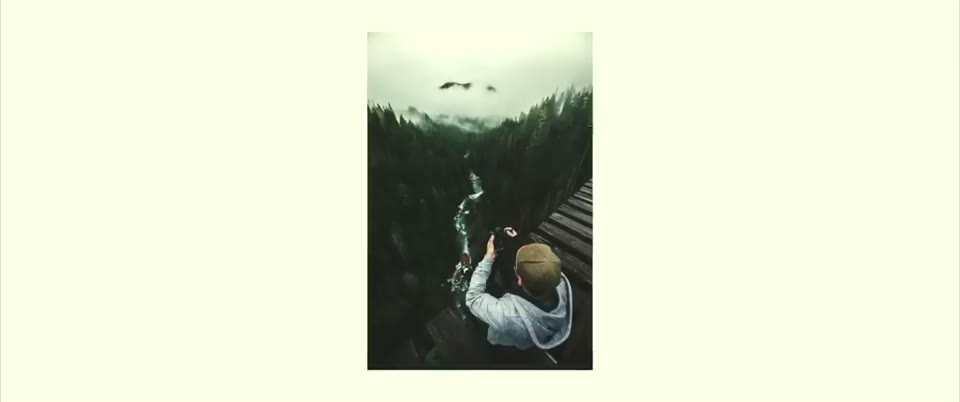 |
4:59→5:10 | 11.6s | 常规 | |
| 48 | 5:10→5:21 | 10.8s | 常规 | ||
| 49 |  |
5:21→5:22 | 0.8s | 快切 | 进入节奏 |
| 50 | 5:22→5:28 | 6.4s | 常规 | 固定 |
搞笑安全准备
5:16–6:00 11 镜头台词「在店里找绳子，想做个绳梯爬上桥…」(全程紧张吐槽)
音乐轻松俏皮，节奏跳跃。
镜头超市穿行+橙色手写字幕梗『SAFETY PRECAUTION #1测平衡/#3剪刘海/#4打绳结/#5桥上固定绳』；字幕梗+快切做喜剧节奏，缓解上桥前紧张。
| # | 画面 | 入–出 | 时长 | 节奏 | 备注（调色/构图/运镜） |
|---|---|---|---|---|---|
| 51 | 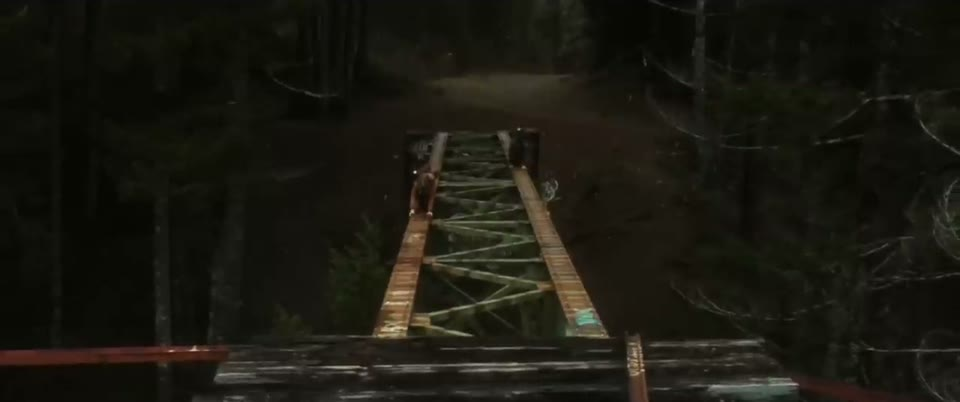 |
5:28→5:30 | 1.4s | 常规 | 手持混合镜头，交代事件和环境 |
| 52 | 5:30→5:33 | 3.0s | 常规 | ||
| 53 | 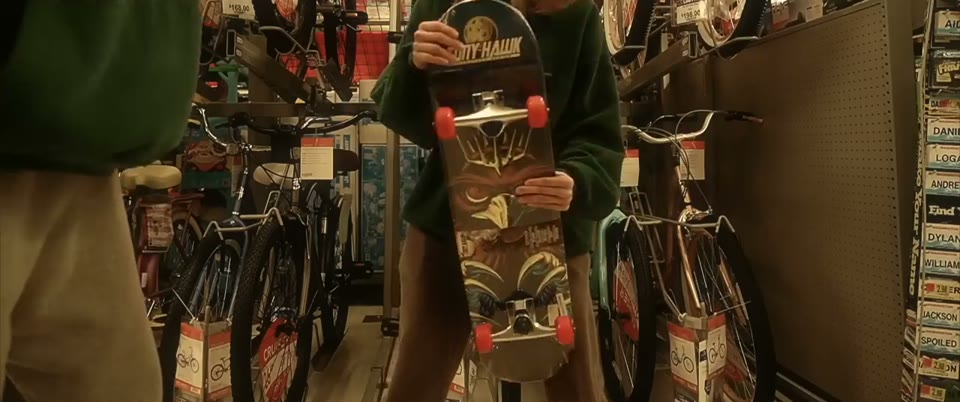 |
5:33→5:35 | 2.0s | 常规 | |
| 54 |  |
5:35→5:39 | 4.8s | 常规 | |
| 55 | 5:39→5:46 | 6.7s | 常规 | ||
| 56 | 5:46→6:02 | 16.0s | 常规 | 混合各种奇怪的镜头素材 | |
| 57 | 6:02→6:05 | 2.5s | 常规 | ||
| 58 | 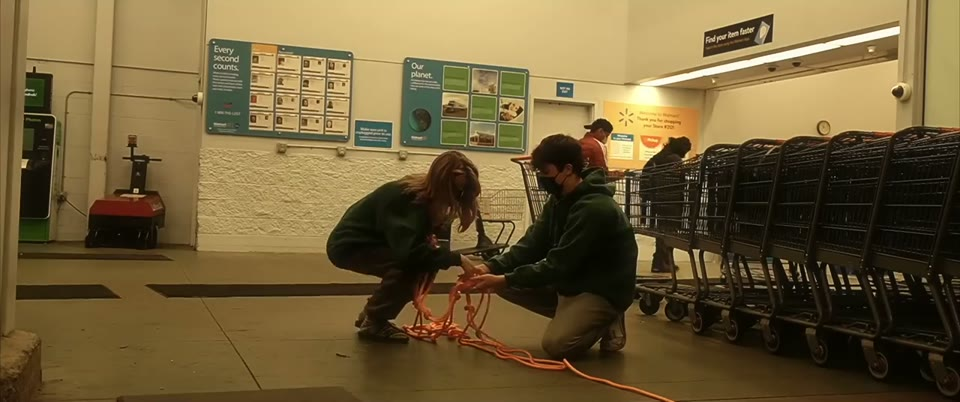 |
6:05→6:07 | 2.0s | 常规 | |
| 59 | 6:07→6:08 | 1.7s | 常规 | ||
| 60 | 6:08→6:16 | 7.3s | 常规 | ||
| 61 | 6:16→6:26 | 10.5s | 常规 | 手持，交代环境，切中景 |
走大桥（高潮①）
6:00–8:06高潮 8 镜头台词「不敢信真在做…明天可能就死了。但这次冒险让我明白：若一辈子都在怕死，也许永远不懂真正活着是什么感觉。我抖得好厉害，太悬了。」
音乐持续走高（5:00–6:20），紧张鼓点+弦乐，桥上释放欢呼。
镜头钢制铁路栈桥全景 → 第一视角走枕木/低角度拍脚/张臂走桥/人如蝼蚁极远景；POV主观镜头造恐高代入，低角度+极远景强化『高度』。


童心反思
8:06–9:01 1 镜头台词「不是说冒险才能活着。回看一生，最有活力是小时候——孩子把任何小事玩出花。长大后我太把生活当回事…也许变老不代表必须长大。」
音乐8:10 骤降留白（-36dB），随后回温柔中速，情绪呼吸。
镜头超长镜头（127s/137s）放慢节奏，口播为主，与前段快切形成强烈张弛对比。
| # | 画面 | 入–出 | 时长 | 节奏 | 备注（调色/构图/运镜） |
|---|---|---|---|---|---|
| 70 |  |
8:01→10:08 | 127.4s | 长镜 |
木头棍斗
9:01–11:56 5 镜头台词「在多苔藓的太平洋西北森林里，各找一根棍子站倒木上决斗，先掉下去的输。叫 sword fight 像5岁，改名 stick fight 成熟多了。My name is Matthias, 19岁，为这场决斗训练了一辈子。」
音乐轻快谐趣，中速节拍。
镜头找棍+倒木对打+伪真人秀采访口吻+慢镜失衡；采访插入/慢动作/正反打/投票梗，明快多机位感。
| # | 画面 | 入–出 | 时长 | 节奏 | 备注（调色/构图/运镜） |
|---|---|---|---|---|---|
| 71 | 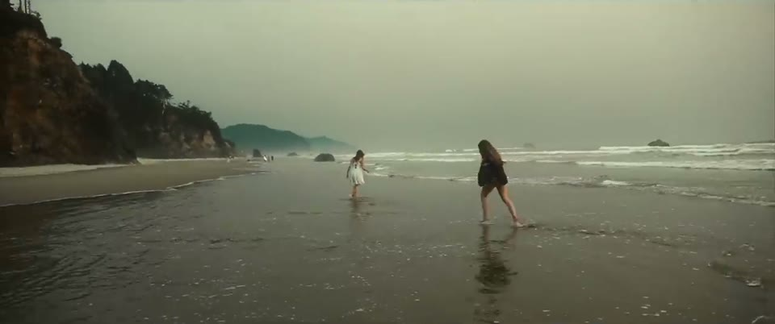 |
10:08→10:31 | 22.9s | 常规 | 反思过去，切入童年，历史资料和 |
| 72 | 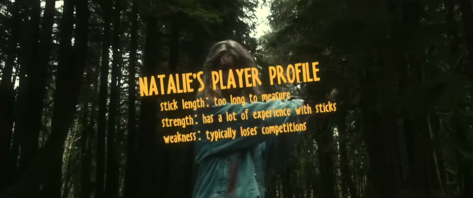 |
10:31→10:44 | 13.0s | 常规 | |
| 73 | 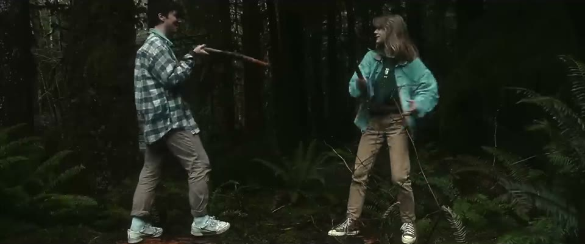 |
10:44→11:11 | 27.0s | 常规 | 各种镜头交代故事场景，人物各种各样的镜头 |
| 74 | 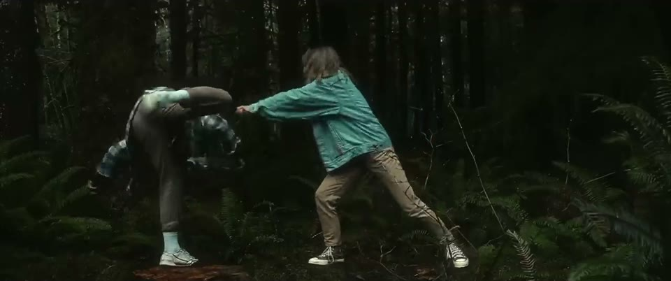 |
11:11→12:13 | 62.0s | 长镜 | |
| 75 |  |
12:13→12:25 | 12.2s | 常规 |
房车夜聚
11:56–13:48 13 镜头台词(多为音乐与笑闹) 独白：「这是我希望能永远的一夜，但正因不会永恒才如此珍贵。」
音乐降速抒情（12:30–14:00），一首含人声慢歌贯穿，温暖。
镜头夜车内手电筒打光+朋友唱闹+海边黄昏剪影；慢镜+暖调+人造光做温情，快切人物反应卡歌词，candid抓拍。
| # | 画面 | 入–出 | 时长 | 节奏 | 备注（调色/构图/运镜） |
|---|---|---|---|---|---|
| 76 |  |
12:25→12:38 | 13.2s | 常规 | 近景，固定混合镜头 |
| 77 | 12:38→12:39 | 0.5s | 快切 | ||
| 78 | 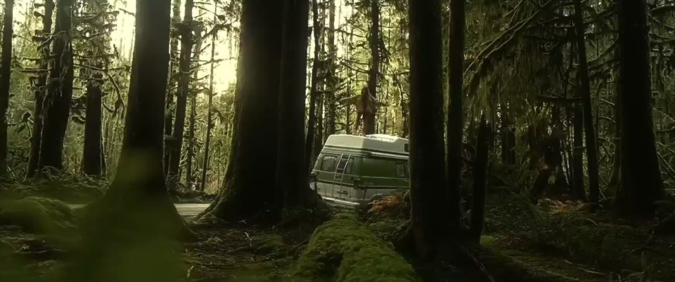 |
12:39→12:40 | 1.1s | 常规 | |
| 79 | 12:40→12:54 | 13.9s | 常规 | ||
| 80 | 12:54→13:02 | 8.3s | 常规 | 固定镜头 | |
| 81 | 13:02→13:04 | 1.9s | 常规 | ||
| 82 |  |
13:04→13:12 | 7.5s | 常规 | |
| 83 |  |
13:12→13:15 | 3.5s | 常规 | |
| 84 |  |
13:15→13:25 | 9.7s | 常规 | |
| 85 | 13:25→13:34 | 9.2s | 常规 | ||
| 86 | 13:34→13:35 | 1.3s | 常规 | ||
| 87 | 13:35→13:37 | 2.1s | 常规 | ||
| 88 | 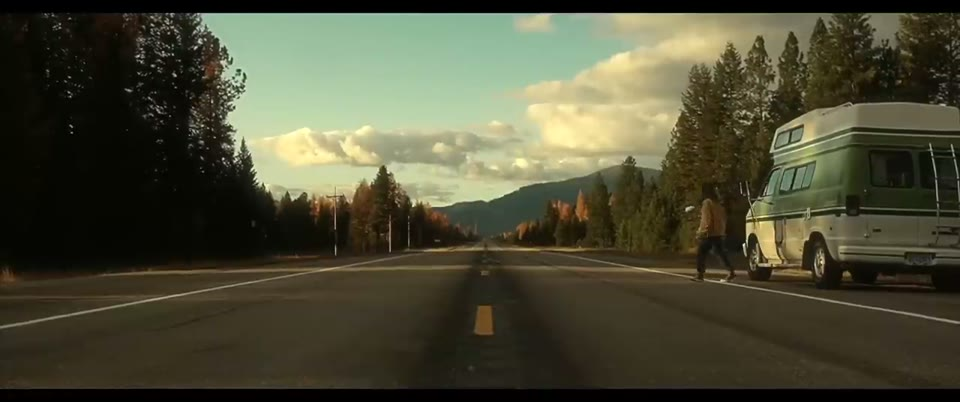 |
13:37→13:49 | 12.0s | 常规 |
意义升华
13:48–14:14 2 镜头台词「听过一句话——『总有一天你的一生会在眼前闪回，所以确保它值得一看』。这就是我这20岁和房车生活的目标：多去经历真正让我觉得活着的瞬间。」
音乐抒情延续，能量中低。
镜头树下口播长镜+抒情空镜，为最终高潮蓄力。
| # | 画面 | 入–出 | 时长 | 节奏 | 备注（调色/构图/运镜） |
|---|---|---|---|---|---|
| 89 | 13:49→14:11 | 21.7s | 常规 | ||
| 90 |  |
14:11→14:28 | 16.9s | 常规 |
活着蒙太奇（高潮②）
14:14–15:48高潮 16 镜头台词(14:14–15:05 整段无台词·纯音乐) 收束一句：But I no longer fear death, because I know I've experienced what it's like to truly live.
音乐能量峰值②（15:00–15:50），前置 14:40–14:50 近乎静音的最大留白蓄势，随后情绪彻底爆发。
镜头金光奔跑/跳跃/拥抱/戏水/滑板顺坡/夜灯相依/举臂欢呼；最密集快切（镜头80-87约0.5秒）卡drop，逆光慢镜跳切，全片视听最高点。
| # | 画面 | 入–出 | 时长 | 节奏 | 备注（调色/构图/运镜） |
|---|---|---|---|---|---|
| 91 | 14:28→14:30 | 1.6s | 常规 | ||
| 92 | 14:30→14:31 | 1.8s | 常规 | ||
| 93 | 14:31→14:33 | 1.3s | 常规 | ||
| 94 |  |
14:33→14:35 | 1.8s | 常规 | |
| 95 | 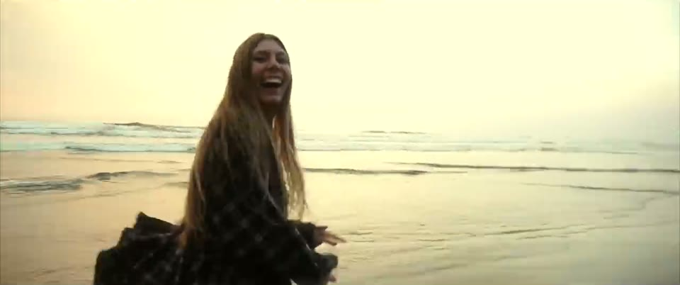 |
14:35→14:36 | 1.7s | 常规 | |
| 96 | 14:36→14:37 | 0.9s | 快切 | ||
| 97 | 14:37→14:38 | 0.6s | 快切 | ||
| 98 | 14:38→14:39 | 0.9s | 快切 | ||
| 99 | 14:39→14:39 | 0.6s | 快切 | ||
| 100 | 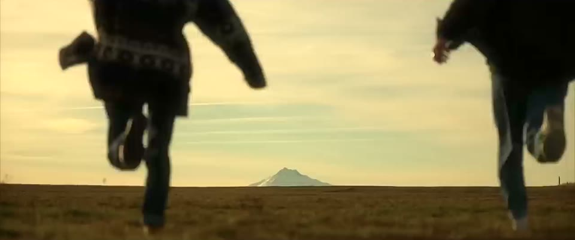 |
14:39→14:40 | 0.5s | 快切 | |
| 101 |  |
14:40→14:40 | 0.5s | 快切 | |
| 102 | 14:40→14:41 | 0.5s | 快切 | ||
| 103 |  |
14:41→14:42 | 0.8s | 快切 | |
| 104 |  |
14:42→14:54 | 12.3s | 常规 | |
| 105 |  |
14:54→15:13 | 18.8s | 常规 | |
| 106 | 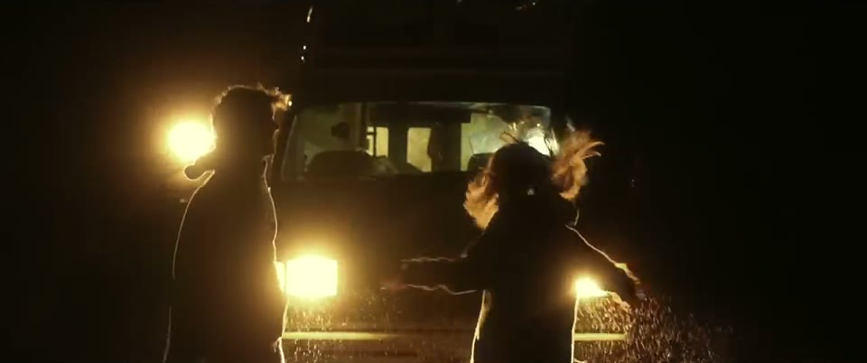 |
15:13→15:48 | 35.6s | 长镜 |
片尾+花絮
15:48–17:38 1 镜头台词(花絮NG)「Oh fuck…为这一个镜头拍了一整天可能还没成…this is the fresh cut guys…Good game, good game.」
音乐音乐渐弱收尾。
镜头左滚动名单+右暗光侧影叠棍斗/剪发花絮；字幕叠花絮轻松收尾，打破严肃感留生活气。
| # | 画面 | 入–出 | 时长 | 节奏 | 备注（调色/构图/运镜） |
|---|---|---|---|---|---|
| 107 | 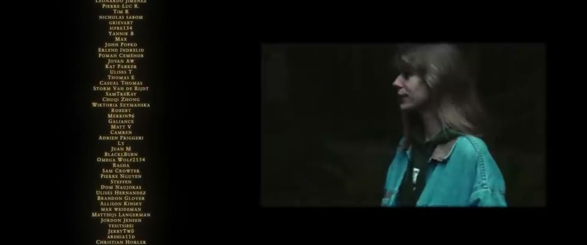 |
15:48→17:38 | 109.6s | 长镜 |